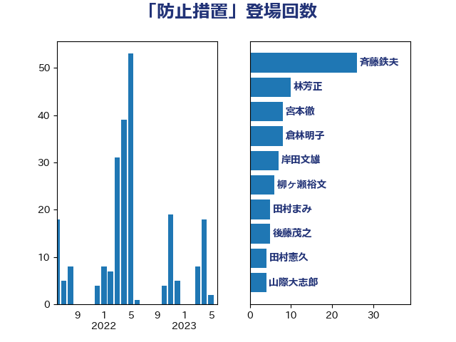

単語「防止措置」

| 斉藤鉄夫 | 公明党 | 26 回 |
| 林芳正 | 自由民主党 | 10 回 |
| 宮本徹 | 日本共産党 | 8 回 |
| 倉林明子 | 日本共産党 | 8 回 |
| 岸田文雄 | 自由民主党 | 7 回 |
| 柳ヶ瀬裕文 | 日本維新の会 | 6 回 |
| 田村まみ | 国民民主党 | 5 回 |
| 後藤茂之 | 自由民主党 | 5 回 |
| 田村憲久 | 自由民主党 | 4 回 |
| 山際大志郎 | 自由民主党 | 4 回 |
| 山田太郎 | 自由民主党 | 4 回 |
| 加藤勝信 | 自由民主党 | 4 回 |
| 片山大介 | 日本維新の会 | 3 回 |
| 鈴木英敬 | 自由民主党 | 2 回 |
| 野田国義 | 立憲民主党 | 2 回 |
| 福山哲郎 | 立憲民主党 | 2 回 |
| 末松信介 | 自由民主党 | 2 回 |
| 朝日健太郎 | 自由民主党 | 2 回 |
| 吉良よし子 | 日本共産党 | 2 回 |
| たがや亮 | れいわ新選組 | 2 回 |
| 高木毅 | 自由民主党 | 1 回 |
| 高木かおり | 日本維新の会 | 1 回 |
| 須藤元気 | 無所属 | 1 回 |
| 音喜多駿 | 日本維新の会 | 1 回 |
| 長峯誠 | 自由民主党 | 1 回 |
| 鎌田さゆり | 立憲民主党 | 1 回 |
| 酒井庸行 | 自由民主党 | 1 回 |
| 足立敏之 | 自由民主党 | 1 回 |
| 菅家一郎 | 自由民主党 | 1 回 |
| 緒方林太郎 | 無所属 | 1 回 |
| 竹内真二 | 公明党 | 1 回 |
| 神津たけし | 立憲民主党 | 1 回 |
| 礒崎哲史 | 国民民主党 | 1 回 |
| 石垣のりこ | 立憲民主党 | 1 回 |
| 石井章 | 日本維新の会 | 1 回 |
| 牧山ひろえ | 立憲民主党 | 1 回 |
| 渡辺猛之 | 自由民主党 | 1 回 |
| 河野義博 | 公明党 | 1 回 |
| 河西宏一 | 公明党 | 1 回 |
| 水野素子 | 立憲民主党 | 1 回 |
| 横沢高徳 | 立憲民主党 | 1 回 |
| 森本真治 | 立憲民主党 | 1 回 |
| 柴田巧 | 日本維新の会 | 1 回 |
| 杉尾秀哉 | 立憲民主党 | 1 回 |
| 本田顕子 | 自由民主党 | 1 回 |
| 早稲田ゆき | 立憲民主党 | 1 回 |
| 斎藤嘉隆 | 立憲民主党 | 1 回 |
| 川田龍平 | 立憲民主党 | 1 回 |
| 岩本剛人 | 自由民主党 | 1 回 |
| 岡本三成 | 公明党 | 1 回 |
| 山添拓 | 日本共産党 | 1 回 |
| 山口壯 | 自由民主党 | 1 回 |
| 小西洋之 | 立憲民主党 | 1 回 |
| 小池晃 | 日本共産党 | 1 回 |
| 小林茂樹 | 自由民主党 | 1 回 |
| 宮崎雅夫 | 自由民主党 | 1 回 |
| 宮口治子 | 立憲民主党 | 1 回 |
| 宗清皇一 | 自由民主党 | 1 回 |
| 大島敦 | 立憲民主党 | 1 回 |
| 大口善徳 | 公明党 | 1 回 |
| 堤かなめ | 立憲民主党 | 1 回 |
| 勝部賢志 | 立憲民主党 | 1 回 |
| あかま二郎 | 自由民主党 | 1 回 |